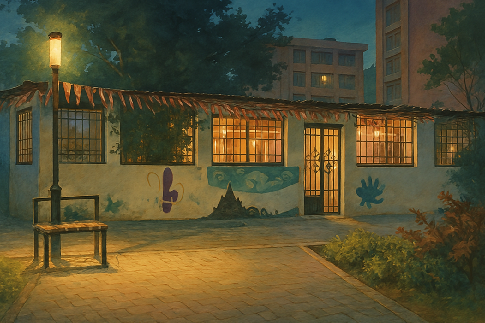

عشيرة جوالة
كلية العلوم
جامعة عين شمس
نبني القادة... ونخدم المجتمع
من نحن
عشيرة جوالة كلية العلوم بجامعة عين شمس هي نشاط طلابي تابع للجنة الجوالة والخدمة العامة باتحاد طلاب كلية العلوم، يهدف إلى إعداد جيل من الشباب يمتلك روح القيادة والعمل الجماعي والمسؤولية المجتمعية من خلال الأنشطة الكشفية والتطوعية والخدمية. تستند العشيرة إلى مبادئ الحركة الكشفية، وتسعى إلى تنمية مهارات أعضائها وصقل شخصياتهم ليكونوا عناصر مؤثرة في مجتمعهم.
فريق القيادة